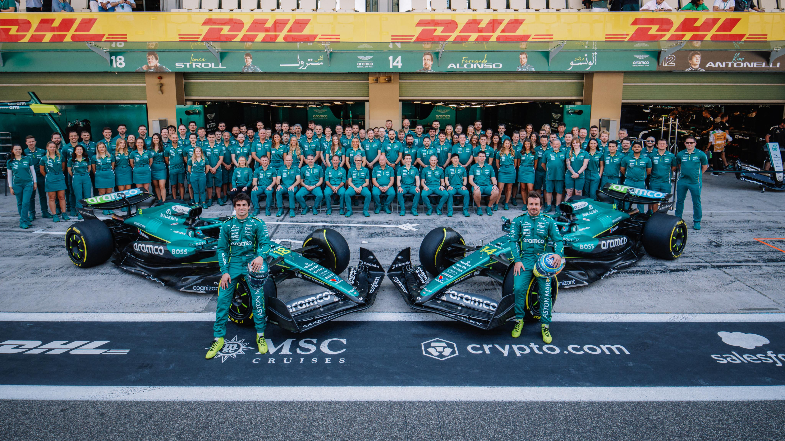

A legelső próbálkozások (1959–1960)
Kevesen tudják, de a híres brit márka, az Aston Martin nem most kezdte az F1-et. A vállalat már 1959-ben rajthoz állt a saját, DBR4-es modelljével. Viszont a siker elmaradt, pontokat nem tudtak szerezni, így 1960 végén fogták magukat, és gyorsan ki is szálltak a versenysorozatból.
A kiindulás: Az első lépések az F1-ben:
Az Aston Martin Forma-1-es története nem a közelmúltban, hanem egészen 1959-ben kezdődött. Ekkor debütáltak a királykategóriában a saját fejlesztésű, DBR4 nevű autójukkal. A csapat első pilótái a brit Roy Salvadori és a legendás amerikai autótervező-versenyző, Carroll Shelby voltak. Bár az autók gyönyörűek voltak, sajnos a pályán már elavultnak számítottak a riválisokhoz képest, így pontot sem sikerült szerezniük. A sikertelenség miatt a márka 1960 végén egy időre hátat is fordított a Forma-1-nek.
A modern csapat igazi gyökerei: A Jordan-éra (1991–2005)
A mai Aston Martin istálló története egyáltalán nem egyenes vonalú! A csapat alapjait még 1991-ben tette le egy Eddie Jordan nevű üzletember (Jordan Grand Prix néven). Gondoltad volna, hogy a legendás, hétszeres világbajnok Michael Schumacher is náluk debütált? Az 1990-es években nagyon ment a szekér, 1999-ben megcsípték a harmadik helyet a csapatok (konstruktőrök) között. Aztán jött a lejtmenet, és 2005-ben a csapatot eladták.
Keresik a helyüket: Midland, Spyker és a Force India (2006–2018)
A következő években az istálló kézről kézre járt:
- Volt Midland F1 (2006) és Spyker F1 (2007) is, de ezek a projektek nagyon rövid ideig tartottak és teljesen sikertelenek voltak.
- Aztán 2008-ban egy indiai milliárdos, Vijay Mallya vette meg őket, és lettek Sahara Force India. Ők voltak az igazi "sötét lovak": kis költségvetésből küzdötték fel magukat a középmezőny élére (2016-ban és 2017-ben is negyedikek lettek). Végül azonban 2018-ban csődeljárás alá kerültek.
A megmentő és az új korszak (2018–)
2018 nyarán jött egy Lawrence Stroll vezette befektetői csoport (Stroll egy kanadai üzletember), akik megmentették a csődbe ment csapatot. Kicsit később, 2021-ben pedig visszahozták az Aston Martin nevet a Formula–1-be!
A modern csapat igazi gyökerei: A Jordan-éra (1991–2005)
A mai Aston Martin istálló története egyáltalán nem egyenes vonalú! A csapat alapjait még 1991-ben tette le egy Eddie Jordan nevű üzletember (Jordan Grand Prix néven). Gondoltad volna, hogy a legendás, hétszeres világbajnok Michael Schumacher is náluk debütált? Az 1990-es években nagyon ment a szekér, 1999-ben megcsípték a harmadik helyet a csapatok (konstruktőrök) között. Aztán jött a lejtmenet, és 2005-ben a csapatot eladták.
Olyan legendás pilótákat sikerült megszerezniük, mint a négyszeres világbajnok Sebastian Vettel, vagy a kétszeres bajnok Fernando Alonso (aki jelenleg is náluk nyomja a gázt).
Olyan legendás pilótákat sikerült megszerezniük, mint a négyszeres világbajnok Sebastian Vettel, vagy a kétszeres bajnok Fernando Alonso (aki jelenleg is náluk nyomja a gázt).